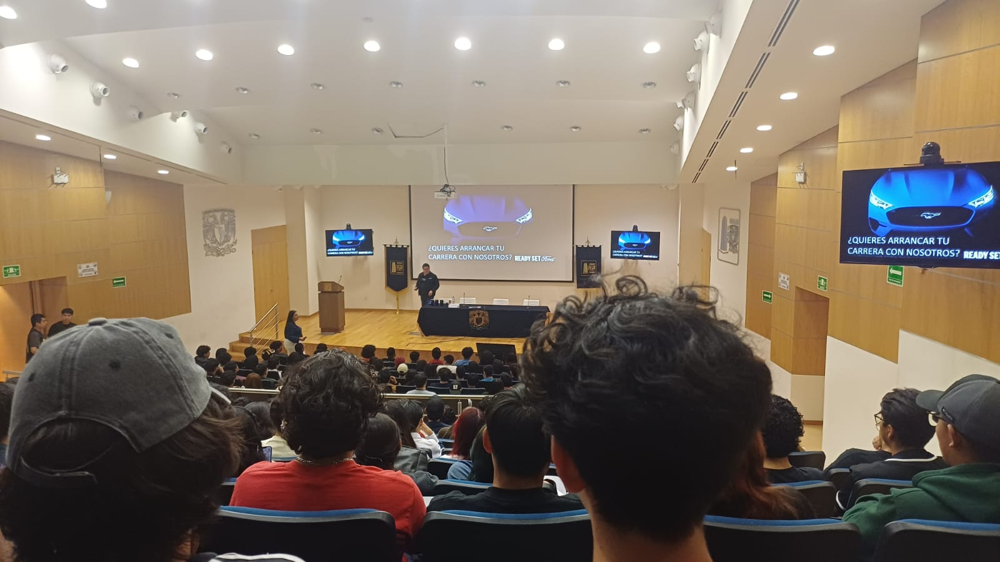
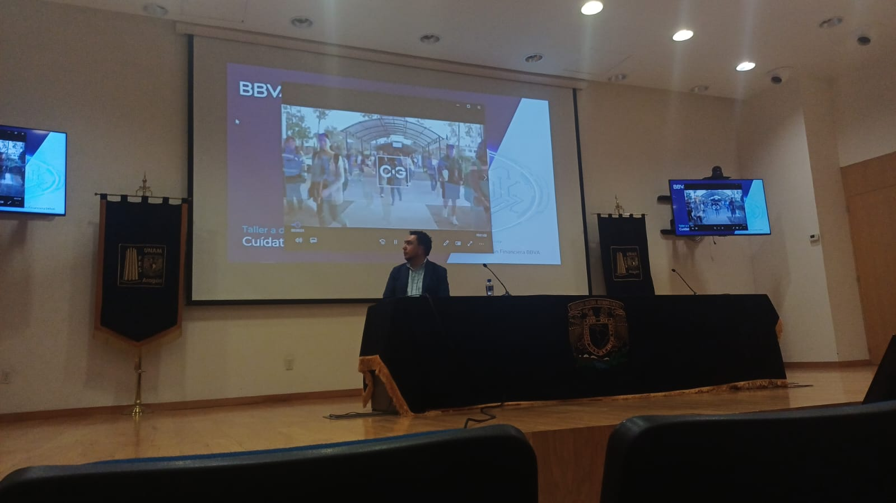

Semana de la Ingenieria

Drive to Future
Conferencia imoartida por un reclutador de FORD

Ciberseguridad y Prevencion
Conferencia impartida por BBVA

Recuperacion de circuitos y Sustentabilidad
Conferencia sobre la raparacion de tarjetas electronicas
Semana de la Ingeniería
La Semana de la Ingeniería de la FES Aragón es un evento académico que reúne a estudiantes, profesores, especialistas y profesionales de distintas áreas de la ingeniería para compartir conocimientos, experiencias e ideas relacionadas con el desarrollo tecnológico y científico.
Durante esta semana se realizan diversas actividades como conferencias, talleres, exposiciones, demostraciones y mesas de diálogo, abordando temas de actualidad relacionados con la formación profesional de los estudiantes.
Estas actividades permiten complementar los conocimientos adquiridos en el aula y acercar a la comunidad universitaria al ámbito profesional, promoviendo el intercambio de conocimientos y la vinculación con diferentes sectores de la ingeniería.
Un evento multidisciplinario
La Semana de la Ingeniería es un evento multidisciplinario en el que participan las cinco ingenierías de la Facultad de Estudios Superiores Aragón:
Edición 2027-1
La edición correspondiente al semestre 2027-1 se llevó a cabo del 21 al 25 de septiembre. Durante esta edición se presentaron 75 eventos, en los cuales los estudiantes pudieron adquirir conocimientos relacionados con el ámbito laboral, técnico y social, contribuyendo a su desarrollo integral y a la obtención de horas complementarias.
Sobre este proyecto
La presente página web es un proyecto correspondiente al primer parcial de la materia de Programación Web 2. Como parte de la actividad, se asistió a tres conferencias de la Semana de la Ingeniería y se desarrollará una página dedicada a cada una de ellas.
Las conferencias abordadas en este proyecto son:
Drive to Future
Conferencia presentada por un reclutador activo de FORD, perteneciente a la división de Talent Acquisition. En ella se abordaron temas relacionados con el desarrollo profesional y los procesos de reclutamiento de la empresa.
Ciberseguridad y Prevención
Conferencia presentada por Jesús Flores Ortega, economista que forma parte de BBVA. Se abordaron temas relacionados con los fraudes, sus diferentes tipos y algunos conceptos básicos que cualquier persona puede aplicar para prevenirlos.
Recuperación de circuitos electrónicos y sustentabilidad
Conferencia impartida por Edgar Antonio Reyes Ramírez, profesional del área de reparación de circuitos electrónicos. Se abordó la reparación de tarjetas electrónicas, los módulos que deben revisarse, el proceso de diagnóstico, los fallos más comunes y las ventajas económicas y ambientales de reparar los dispositivos en lugar de reemplazarlos.